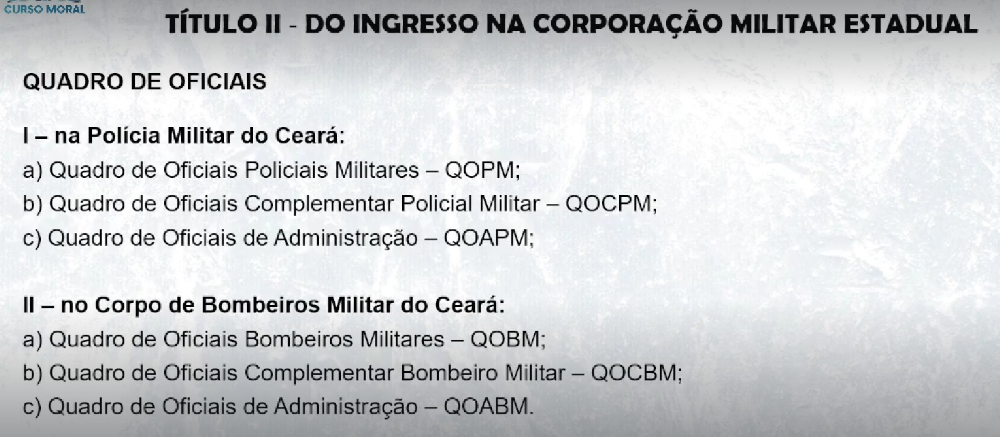
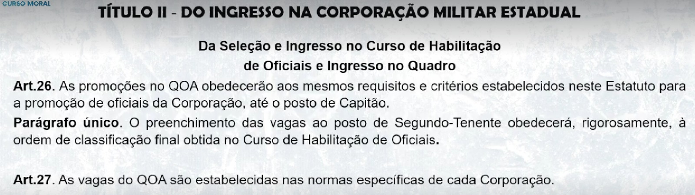
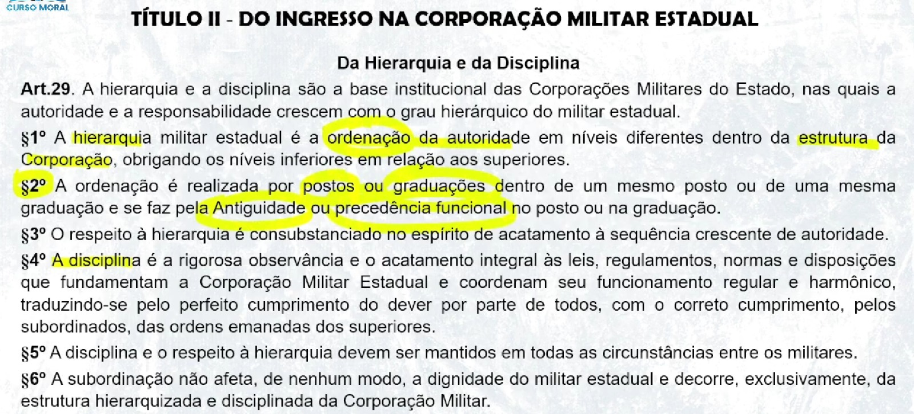
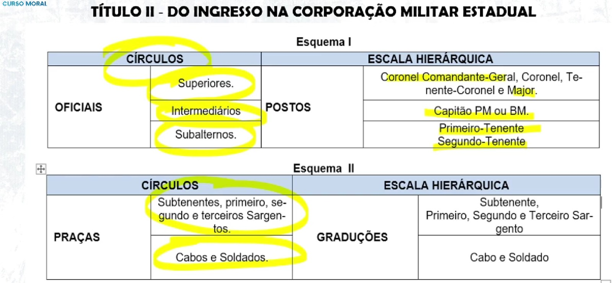
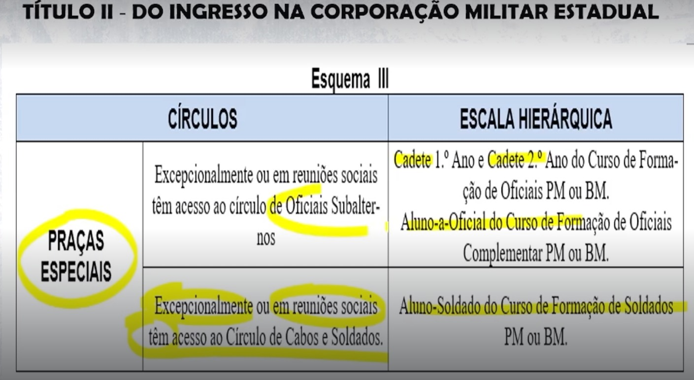
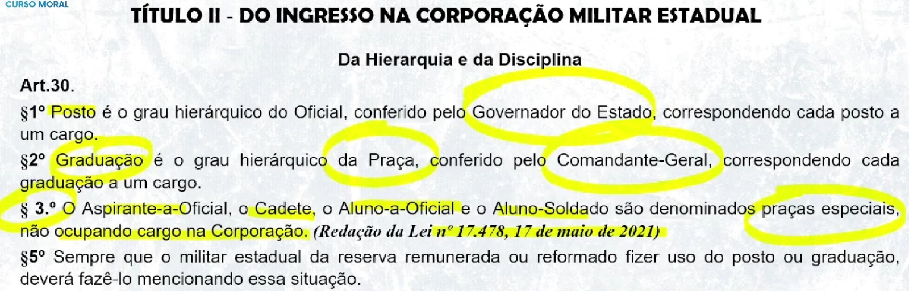
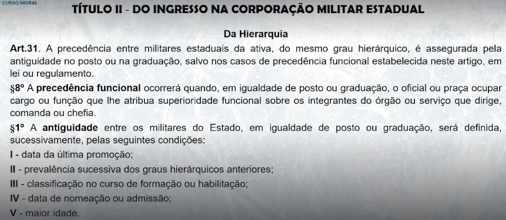
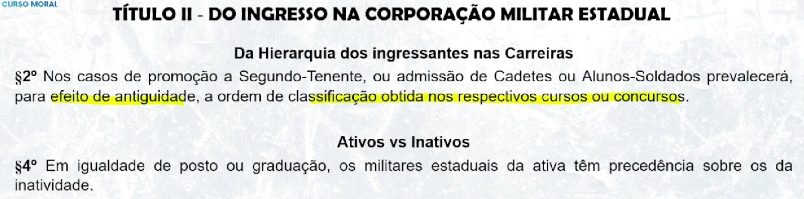
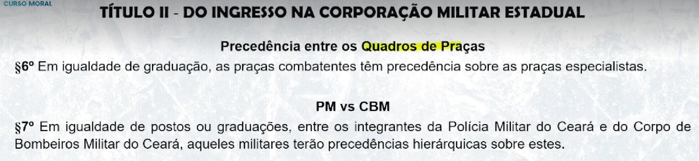

TÍTULO I
GENERALIDADES
🎥 01. Estatuto Militar - Aula 1


A situação, direitos, prerrogativas, deveres e obrigações dos militares estaduais. (Art. 1º)
(S) SITUAÇÃO (Ativa ou Inativa) (Art. 3º)
(D) DIREITO (Art. 52 ao 68)
(P) PRERROGATIVAS (Art. 69 ao 76)
(O) OBRIGAÇÕES
(D) DEVERES

🎥 02. Estatuto Militar - Aula 2
Os membros das Corporações Militares do Estado, instituições organizadas com base na hierarquia e disciplina, forças auxiliares e reserva do Exército, subordinadas ao Governador do Estado e vinculadas operacionalmente à Secretaria da Segurança Pública e Defesa Social. (Art. 2º)
💡 Parágrafo único. A vinculação é ato ou efeito de ficarem as Corporações Militares do Estado sob a direção operacional da Secretaria da Segurança Pública e Defesa Social. (Art. 2º)
💡 Resumo do Artigo:
📍 (1) Hierarquia e disciplina são as bases institucionais
📍 (2) Forças auxiliares do EB
📍 (3) São subordinadas ao governador (Chefe Supremo)
📍 (4) Vinculadas operacionalmente à Secretaria da Segurança Pública e Defesa Social

📍 (1) exercer a polícia ostensiva,
📍 (2) preservar a ordem pública,
📍 (3) proteger a incolumidade da pessoa e do patrimônio e
📍 (4) garantir os Poderes constituídos no regular desempenho de suas competências, cumprindo as requisições emanadas de qualquer destes,
📍 (5) bem como exercer a atividade de polícia judiciária militar estadual, relativa aos
crimes militares definidos em lei, inerentes a seus integrantes;

📍 (1) a proteção da pessoa e do patrimônio, visando à incolumidade em situações de risco, infortúnio ou de calamidade,
📍 (2) a execução de atividades de defesa civil,
📍 (3) devendo cumprimento às requisições emanadas dos Poderes estaduais,
📍 (4) bem como exercer a atividade de polícia judiciária militar estadual, relativa aos crimes militares definidos em lei, inerentes a seus integrantes.

💡 I - na ativa:
📍 a) os militares estaduais de carreira;
📍 b) Cadetes e Alunos-Soldados de órgãos de formação de militares estaduais;
📍 c) os Alunos-a-Oficiais dos cursos específicos dos Quadros Complementares na Polícia
Militar e no Corpo de Bombeiros Militar, conforme dispuser esta Lei e regulamento
específico; (modificado pela LEI Nº17.478, 17 de maio de 2021)
📍 d) os componentes da reserva remunerada, quando convocados;
💡 II - na inatividade:
📍 a) os componentes da reserva remunerada, pertencentes à reserva da respectiva
Corporação, da qual percebam remuneração, sujeitos, ainda, à prestação de serviço na
ativa, mediante convocação;
📍 b) os reformados, quando, tendo passado por uma das situações anteriores, estejam
dispensados, definitivamente, da prestação de serviço na ativa, mas continuem a perceber
remuneração pela respectiva Corporação. (Art. 3º)

No exercício de atividades inerentes à Polícia Militar e ao Corpo de Bombeiros Militar, compreendendo todos os encargos previstos na legislação especifica e relacionados com as missões fundamentais da Corporação. (Art. 4º)
atividade continuada e inteiramente devotada às finalidades e missões fundamentais das Corporações Militares estaduais, denominada atividade militar estadual.
💡 Parágrafo único. A carreira militar estadual é privativa do pessoal da ativa das Corporações Militares do Estado, iniciando-se com o ingresso e obedecendo-se à sequência de graus
hierárquicos. (Art. 5º)
conjunto de atribuições, deveres e responsabilidades que se constituem em obrigações do respectivo titular. (Art. 37)
(D) DEVERES
(A) ATRIBUIÇÕES
(R) RESPONSABILIDADES (funcional, penal, civil)
o exercício das obrigações inerentes a cargo militar
estadual. (Art. 39)
autoridade, deveres e responsabilidades de que o militar
estadual está investido legalmente, quando conduz subordinados ou dirige uma
Organização Militar Estadual, sendo vinculado ao grau hierárquico e constituindo uma
prerrogativa impessoal, em cujo exercício o militar estadual se define e se caracteriza como chefe. (Art. 42)
(D) DEVERES
(A) AUTORIDADE
(R) RESPONSABILIDADES (funcional, penal, civil)

Boletim Interno da respectiva Corporação Militar. (Art. 8º, Parágrafo único)
no que couber, aos militares estaduais da reserva remunerada e aos reformados.
Parágrafo único. O voluntário incluído com base na Lei nº 13.326, de 15 de julho de 2003,
estará sujeito a normas próprias, a serem regulamentadas por Decreto do Chefe do Poder
Executivo, na conformidade do art.2º da citada Lei.

TÍTULO II - DO INGRESSO NA CORPORAÇÃO MILITAR ESTADUAL
CAPÍTULO I
DOS REQUISITOS ESSENCIAIS
🎥 03. Estatuto Militar - Aula 3
O ingresso na Polícia Militar e no Corpo de Bombeiros Militar do Ceará dar-se-á
para o preenchimento de cargos vagos, mediante prévia aprovação em concurso público de
provas ou de provas e títulos, promovido pela Secretaria da Segurança Pública e Defesa
Social em conjunto com a Secretaria do Planejamento e Gestão, na forma que dispuser o
Edital do concurso, atendidos os seguintes requisitos cumulativos, além dos previstos no
Edital: (Art. 10)
💡 I - Ser Brasileiro
💡 II – ter, na data de ingresso como Cadete do 1.º Ano, Aluno-a-Oficial e Aluno-Soldado, idade igual ou superior a 18 (dezoito) anos e, na data de inscrição no concurso:
📍 a) idade de até 29 (vinte e nove) anos, 11 (onze) meses e 29 (vinte e nove) dias para ingresso como Cadete 1.º do Ano; (Não pode ter 30 anos completos)
📍 b) idade de até 29 (vinte e nove) anos, 11 (onze) meses e 29 (vinte e nove) dias para ingresso como Aluno-Soldado;(Não pode ter 30 anos completos)
📍 c) idade de até 34 (trinta e quatro) anos, 11 (onze) meses e 29 (vinte e nove) dias para ingresso como Aluno-a-Oficial.(Complementar: Não pode ter 35 anos completos) (modificado pela LEI Nº17.478, 17 de maio de 2021)
💡 III - possuir honorabilidade compatível com a situação de futuro militar estadual, tendo, para tanto, boa reputação social e não estando respondendo a processo criminal, nem indiciado em inquérito policial;
💡 IV - não ser, nem ter sido, condenado judicialmente por prática criminosa;
💡 V - estar em situação regular com as obrigações eleitorais e militares;
💡 VI - não ter sido isentado do serviço militar por incapacidade definitiva;
💡 VII – ter concluído, até a data de ingresso de Cadete do 1.º Ano e Aluno-a-Oficial, o ensino superior completo, bem como, até a data o ingresso como Aluno-Soldado, o ensino médio
completo, ambos reconhecidos pelo Ministério da Educação; (modificado pela LEI
Nº17.478, 17 de maio de 2021)
💡 VIII - não ter sido licenciado de Corporação Militar ou das Forças Armadas no
comportamento inferior ao “Bom”;
💡 IX - não ter sido demitido, excluído ou licenciado ex officio “a bem da disciplina”, “a bem do serviço público” ou por decisão judicial de qualquer órgão público, da administração direta ou indireta, de Corporação Militar ou das Forças Armadas;
💡 X - ter, no mínimo, 1,62m de altura, se candidata do sexo masculino, e 1,57m, se candidato do sexo feminino;
💡 XI - se do sexo feminino, não estar grávida, por ocasião da realização do Curso de Formação Profissional, devido à incompatibilidade desse estado com os exercícios exigidos;
💡 XII – ter conhecimento de matérias relevantes ao desempenho do posto ou da graduação
em disputa, conforme dispuser o edital do concurso; (modificado pela LEI Nº17.478, 17 de
maio de 2021)
💡 XIII – ter obtido aprovação em todas as etapas do concurso público, quais sejam:
📍 a) primeira etapa - exames intelectuais (provas), de caráter classificatório e eliminatório, e/ou títulos(Complementar), este último de caráter classificatório, em conformidade com as regras estabelecidas em edital;
📍 b) segunda etapa - exames médico-odontológicos, biométrico e toxicológico, de caráter
eliminatório, em conformidade com as regras estabelecidas em edital;
📍 c) terceira etapa - avaliação psicológica, de caráter eliminatório, em conformidade com as regras estabelecidas em edital;
📍 d) quarta etapa - exame de capacidade física, de caráter eliminatório, em conformidade com as regras estabelecidas em edital;
📍 e) quinta etapa - investigação social, de caráter eliminatório, em conformidade com as regras estabelecidas em edital.
(modificado pela LEI Nº17.478, 17 de maio de 2021)
💡 XIV - atender a outras condições previstas nesta Lei, que tratam de ingresso específico, conforme cada Quadro ou Qualificação.
💡 XV - ser portador de carteira nacional de habilitação classificada, no mínimo, na categoria “B”, na data da matrícula no Curso de Formação Profissional.
📍 §1º O Edital do concurso público estabelecerá as notas mínimas das provas do exame
intelectual, as performances e condições mínimas a serem alcançadas pelo candidato nos
exames médico, biométrico, físico, toxicológico, psicológico e de habilidade específica, sob
pena de eliminação no certame, bem como, quando for o caso, disciplinará os títulos a serem
considerados, os quais terão caráter classificatório.
📍 §2º Somente será aprovado o candidato que atender a todas exigências de que trata o
parágrafo anterior, caso em que figurará entre os classificados e classificáveis.
💡 I - para a carreira de Praça, como Aluno-Soldado do Curso de Formação de Soldados;
💡 II – para as carreiras de Oficial Combatente na Polícia Militar e no Corpo de Bombeiros Militar, como Cadete;
💡 III – para a carreira de Oficial do Quadro Complementar, como Aluno-a-Oficial do Curso de Formação de Oficiais Complementares. (modificado pela LEI Nº17.478, 17 de maio de
2021)
💡 §1º As nomeações decorrentes dos Concursos Públicos das Corporações Militares serão
processadas através da Secretaria da Administração do Estado.
💡 §2º É vedada à mudança de quadro, salvo no caso de aprovação em novo concurso público.
💡 § 3º O limite máximo de vagas para o ingresso no Curso de Formação de Oficiais, no Curso de Formação de Oficiais do Quadro Complementar e no Curso de Formação de Soldados,
será o quantitativo de cargos vagos nas carreiras de Oficial e Praça.
💡 § 4º O Curso de Formação de Oficiais a que faz menção o inciso II deste artigo terá duração de 24 (vinte e quatro) meses, conforme Plano de Ação Educacional da Academia Estadual de Segurança Pública. O Cadete, após concluí-lo, será declarado Aspirante-a-Oficial, dando início a em estágio supervisionado de 6 (seis) meses.
💡 § 5º Obtido conceito favorável na forma de regulamento da Corporação Militar estadual, o Aspirante-a-Oficial será promovido ao posto de 2.º Tenente QOPM; já se o conceito obtido for desfavorável, será o Aspirante-a-Oficial submetido a processo administrativo, conduzido pela respectiva Corporação Militar Estadual, a fim de, garantidos o contraditório e a ampla defesa, avaliar sua capacidade e aptidão técnica e profissional para permanecer no cargo, o que, se não comprovado, ensejará seu desligamento do serviço ativo, sem prejuízo da
observância à legislação disciplinar vigente.
💡 § 6º O militar estadual pertencente à carreira de praça, quando ingressar, após aprovação em concurso público, em Curso de Formação de Oficiais, poderá retornar à referida carreira em caso de desistência, reprovação ou desligamento do curso na forma do § 5.º deste artigo.
💡 § 7.º O Curso de Formação de Soldados a que faz menção o inciso I deste artigo terá duração de no mínimo 6 (seis) meses, conforme Plano de Ação Educacional da Academia Estadual de Segurança Pública. (NR Lei nº 18.126, de 23 de junho de 2022)
💡 § 8.º Concluído o curso de que trata o § 7.º deste artigo, com aprovação, o Aluno-Soldado
será promovido a Soldado, ocasião em que ficará submetido a avaliações periódicas, na forma de regulamento da Corporação Militar estadual, pelo prazo de 3 (três) anos, a fim de avaliar sua aptidão técnica e profissional para o cargo. (NR Lei nº 18.126, de 23 de junho de 2022)
💡 § 9º Finalizada avaliação a que se refere o § 8.º deste artigo e obtendo o Soldado conceito
favorável, será ele considerado estável; caso obtido conceito desfavorável, será o Soldado
submetido a processo administrativo, conduzido pela respectiva Corporação Militar estadual,
a fim de, garantidos o contraditório e a ampla defesa, averiguar suas condições de
permanência no serviço público, sem prejuízo da observância da legislação disciplinar
vigente.
💡 § 10. O Cadete, o Aluno-a-Oficial e o Aluno-Soldado serão desligados da respectiva
Corporação em caso de desligamento do Curso de Formação Militar. (INCLUÍDO - Lei nº
18.126, de 23 de junho de 2022)
💡 § 11. Poderá também o militar ser desligado da Corporação: (Parágrafo e incisos incluídos
pela Lei nº 18.126, de 23 de junho de 2022)
📍 I – em consequência da aplicação de sanção decorrente de transgressão disciplinar escolar
durante o curso de formação, conforme dispuser o regu- lamento do órgão responsável pela
formação;
📍 II – se for denunciado em processo-crime, ou condenado por crime doloso à pena privativa
de liberdade, submetido a prisão temporária ou preventiva, na forma da legislação penal ou
penal militar;
📍 III – se for submetido a processo com fundamento na Lei Federal n.º 8.429, de 2 de junho
de 1992;
📍 IV – se for afastado preventivamente na forma do art. 18 da Lei Complementar n.º 98, de 20
de junho de 2011;
📍 V – caso pratique transgressão de natureza grave, punível com demissão ou expulsão, nos
termos da Lei n.º 13.407, de 21 de novembro de 2003;
📍 VI – se ingressar no comportamento mau;
📍 VII – caso seja reprovado no Curso de Formação por ultrapassar o limite de faltas previsto
na Lei Federal n.º 9.394, de 20 de dezembro de 1996.
💡 § 12. Nos casos do § 10 deste artigo, o Cadete, o Aluno-a-Oficial e o Aluno-Soldado serão submetidos a processo administrativo, conforme disposto nos §§ 5.º e 9.º do art. 11 desta
Lei, a ser conduzido pela respectiva Corporação Militar, assegurados o contraditório e a
ampla defesa. (INCLUÍDO - Lei nº 18.126, de 23 de junho de 2022)
Art.11-A. O Cadete, o Aluno-a-Oficial e o Aluno-Soldado poderão requerer a rematrícula nos
Cursos de Formação militar nos seguintes casos: (artigo e incisos incluídos pela Lei nº
18.126, de 23 de junho de 2022)
📍 I – na condição de gestante, quando obtiver parecer médico com recomendação para o
afastamento das atividades educacionais práticas e/ou teóricas, desde que não possa
alcançar a frequência mínima de 75% (setenta e cinco por cento) da carga horária do curso;
📍 II – quando for desligado em razão de doença ou incapacidade física temporária ocasionada
por atividade atrelada ao próprio curso de formação, desde que não possa alcançar a
frequência mínima de 75% (setenta e cinco por cento) da carga horária por disciplina;
📍 III – se obtiver decisão favorável no processo administrativo a que se refere o §11, do art. 11
desta Lei.
§ 1.º No caso do inciso II deste artigo, o desligamento no curso de formação dar-se-á após
alcançado o limite mínimo de frequência por disciplina.
§ 2.º Enquanto estiver aguardando rematrícula para o início de novo curso, o militar exercerá
atividades administrativas na respectiva Corporação.
§ 3.º A rematrícula não permitirá o aproveitamento de disciplinas realizados em curso de
formação anterior, exceto no caso de Curso de Formação de Oficiais do Quadro
Combatente, situação em que, em única oportunidade, o aproveitamento poderá ocorrer em
relação às disciplinas integralmente concluídas com aprovação no semestre.
Art. 11-B. O militar estadual que obtiver decisão administrativa ou judicial favorável à
matrícula em cursos de formação para ingresso e/ou ascensão funcional na carreira
aguardará, salvo decisão judicial expressa em contrário, o início da próxima turma do
respectivo curso para ser matriculado, caso o curso em andamento já houver ultrapassado
o limite de 25% (vinte e cinco por cento) da carga horária. (Artigo incluído pela Lei nº
18.126, de 23 de junho de 2022)

💡 Art. 28. O Quadro de Oficiais Complementares Policial Militar – QOCPM e o Quadro de
Oficiais Complementares Bombeiro Militar – QOCBM são destinados ao desempenho de
atividades de segurança pública nas áreas policiais e bombeirísticas, integrados por oficiais
com graduação em curso superior nas áreas de Medicina, Psicologia, Odontologia, Serviço
Social, Farmácia, Fisioterapia, Teologia, Engenharia e Veterinária, reconhecido pelo
Ministério da Educação
💡 Art. 28-B. Os candidatos aprovados no concurso no limite de vagas previstas em edital
ingressarão na respectiva Corporação como Aluno-a-Oficial, passando a participar de Curso de Formação de Oficiais Complementares – CFOC, durante o qual serão equiparados a
Cadete do 2.º ano do Curso de Formação de Oficiais, fazendo jus à remuneração
correspondente.
💡 § 1.º O Curso de Formação de Oficiais Complementares – CFOC terá a duração de 6 (seis)
meses e será realizado pela Academia Estadual de Segurança Pública – AESP, sob
coordenação da respectiva Corporação Militar. O Aluno-a-Oficial, após concluí-lo, será
declarado Aspirante-a-Oficial, dando início a estágio supervisionado de 3 (três) meses.
TÍTULO II - Cap. IV - DOS QUADROS DE OFICIAIS DE ADMINISTRAÇÃO
SEÇÃO I
Generalidades
🎥 04. Estatuto Militar - Aula 4
💡 Art. 19. Os Quadros de Oficiais de Administração – QOA, da Polícia Militar e do Corpo de Bombeiros Militar serão constituídos de
📍 Segundos Tenentes,
📍 Primeiros Tenentes,
📍 Capitães,
📍 Majores e
📍 Tenentes Coronéis.
(NR dada pelo art. 2º da Lei nº18.011, de 01 de abril de 2022)
💡 Parágrafo único. O posto de Tenente Coronel QOA será reservado exclusivamente à
promoção na modalidade requerida, na forma do art. 23 da Lei n.º 15.797, de 25 de maio de
2015”. (NR dada pelo art. 2º da Lei nº18.011, de 01 de abril de 2022)
prestar apoio às atividades da Corporação, mediante o desempenho de funções administrativas e operacionais. (Art. 20)
seus respectivos cargos, nos termos estabelecidos nas normas dos Quadros de Organização da respectiva Corporação, observando-se o disposto no artigo anterior. (Art. 21)
as funções de Comando e Comando Adjunto de subunidades. (Art. 22)
os mesmos direitos, regalias, prerrogativas, vencimentos e vantagens atribuídas aos oficiais de igual posto dos demais Quadros. (Art. 23)
Nota:
Só vai até TCel
Só vai a Cel na requerida
Só pode comandar e Sub-Comandar Sub-Unidades
TÍTULO II - Cap. IV - DOS QUADROS DE OFICIAIS DE ADMINISTRAÇÃO
SEÇÃO II
Da Seleção e Ingresso no Curso de Habilitação
de Oficiais e Ingresso no Quadro
💡 I (Positivas) - ser Subtenente do serviço ativo da respectiva Corporação, e:
📍 a) possuir o Curso de Formação de Sargentos – CFS, ou o Curso de Habilitação a Sargento - CHS;
📍 b) possuir o Curso de Aperfeiçoamento de Sargentos – CAS, ou Curso de Habilitação a
Subtenente - CHST;
📍 c) ter, no mínimo, 15 (quinze) anos de efetivo serviço na Corporação Militar do Estado do Ceará, computados até a data de encerramento das inscrições do concurso;
📍 d) ser considerado apto, para efeito de curso, pela Junta de Saúde de sua Corporação;
📍 e) ser considerado apto em exame físico;
📍 f) estar classificado, no mínimo, no “ÓTIMO” comportamento;
📍 g) possuir diploma de curso de nível superior, reconhecido pelo Ministério da Educação.
💡 II (Negativas) – não estar enquadrado em nenhuma das situações abaixo:
📍 a) submetido a Processo Regular (Conselho de Disciplina) ou indiciado em inquérito policial militar;
📍 b) condenado à pena de suspensão do exercício de cargo ou função, durante o prazo que persistir a suspensão;
📍 c) cumprindo sentença, inclusive o tempo de sursis;
📍 d) gozando Licença para Tratar de Interesse Particular - LTIP(Lincença para Tratar de Interesse Particular);
📍 e) no exercício de cargo ou função temporária, estranha à atividade policial ou bombeiro militar ou à Segurança Pública;
📍 f) estiver respondendo a processo-crime, salvo quando decorrente do cumprimento de
missão policial militar ou bombeiro militar;
📍 g) ter sido punido com transgressão disciplinar de natureza grave nos últimos 24 (vinte e quatro) meses.
Nota:
Conselho de Justificação: Para Oficiais
Conselho de Disciplina: Para Praças com 10 ou mais anos
PAD: Praças com menos de 10 anos
Procedimento Disciplinar: Processo Regular que não avaliarar se o militar será excluído da instituição para oficial e para praça
TÍTULO II - Cap. IV - DOS QUADROS DE OFICIAIS DE ADMINISTRAÇÃO
SEÇÃO III
Das Promoções nos Quadros
a promoção de oficiais da Corporação, até o posto de Capitão
Parágrafo único. O preenchimento das vagas ao posto de Segundo-Tenente obedecerá, rigorosamente, à ordem de classificação final obtida no Curso de Habilitação de Oficiais. (Art. 26)
nas normas específicas de cada Corporação (Art. 27)

TÍTULO II - Cap. VI - DA HIERARQUIA E DA DISCIPLINA
🎥 05. Estatuto Militar - Aula 5
a base institucional das Corporações Militares do
Estado, nas quais a autoridade e a responsabilidade crescem com o grau hierárquico do
militar estadual. (Art. 29)
a ordenação da autoridade em níveis diferentes dentro da
estrutura da Corporação, obrigando os níveis inferiores em relação aos superiores.(Art. 29, § 1º)
realizada por postos ou graduações dentro de um mesmo posto ou de
uma mesma graduação e se faz pela Antiguidade ou precedência funcional no posto ou na
graduação. (Art. 29, § 2º)
consubstanciado no espírito de acatamento à sequência crescente de autoridade. (Art. 29, § 3º)
a rigorosa observância e o acatamento integral às leis, regulamentos,
normas e disposições que fundamentam a Corporação Militar Estadual e coordenam seu
funcionamento regular e harmônico, traduzindo-se pelo perfeito cumprimento do dever por
parte de todos, com o correto cumprimento, pelos subordinados, das ordens emanadas dos
superiores. (Art. 29, § 4º)
ser mantidos em todas as circunstâncias entre os militares. (Art. 29, § 5º)
exclusivamente, da estrutura hierarquizada e disciplinada da Corporação Militar. (Art. 29, § 6º)



o grau hierárquico do Oficial, conferido pelo Governador do Estado,
correspondendo cada posto a um cargo. (Art. 30. § 1º)
grau hierárquico da Praça, conferido pelo Comandante-Geral,
correspondendo cada graduação a um cargo (Art. 30. § 2º)
praças especiais, não ocupando cargo na Corporação. (Redação da Lei nº 17.478, 17 de
maio de 2021) (Art. 30. § 3º)
mencionando essa situação (Art. 30. § 5º)

PRECEDÊNCIA
É uma relação hierárquica entre militares em cargos iguais
antiguidade entre os militares do Estado, em igualdade de posto ou graduação, será
definida, sucessivamente, pelas seguintes condições:
I - data da última promoção;
II - prevalência sucessiva dos graus hierárquicos anteriores;
III - classificação no curso de formação ou habilitação;
IV - data de nomeação ou admissão;
V - maior idade. (Art. 31, § 1º)
A precedência funcional ocorrerá quando, em igualdade de posto ou graduação, o oficial
ou praça ocupar cargo ou função que lhe atribua superioridade funcional sobre os
integrantes do órgão ou serviço que dirige, comanda ou chefia. (Art. 31, § 8º )

prevalecerá, para efeito de antiguidade, a ordem de classificação obtida nos
respectivos cursos ou concursos. (Art. 31, § 2º)
Em igualdade de posto ou graduação, os militares estaduais da ativa têm precedência
sobre os da inatividade.(Art. 31, § 4º)

Em igualdade de posto, as precedências entre os Quadros estabelecer-se-ão na
seguinte ordem:
I – na Polícia Militar do Ceará:
a) Quadro de Oficiais Policiais Militares – QOPM;
b) Quadro de Oficiais Complementar Policial Militar – QOCPM;
c) Quadro de Oficiais de Administração – QOAPM;
II – no Corpo de Bombeiros Militar do Ceará:
a) Quadro de Oficiais Bombeiros Militares – QOBM;
b) Quadro de Oficiais Complementar Bombeiro Militar – QOCBM;
c) Quadro de Oficiais de Administração – QOABM. (Art. 31, § 5º)
Em igualdade de graduação, as praças combatentes têm precedência sobre as praças
especialistas. (Art. 31, § 6º)
Em igualdade de postos ou graduações, entre os integrantes da Polícia Militar do Ceará
e do Corpo de Bombeiros Militar do Ceará, aqueles militares terão precedências hierárquicas
sobre estes. . (Art. 31, § 7º)

I - os Aspirantes-a-Oficial são hierarquicamente superiores às demais praças;
II - os Cadetes são hierarquicamente superiores aos Subtenentes, Primeiros-Sargentos,
Cabos, Soldados e Alunos-Soldados.